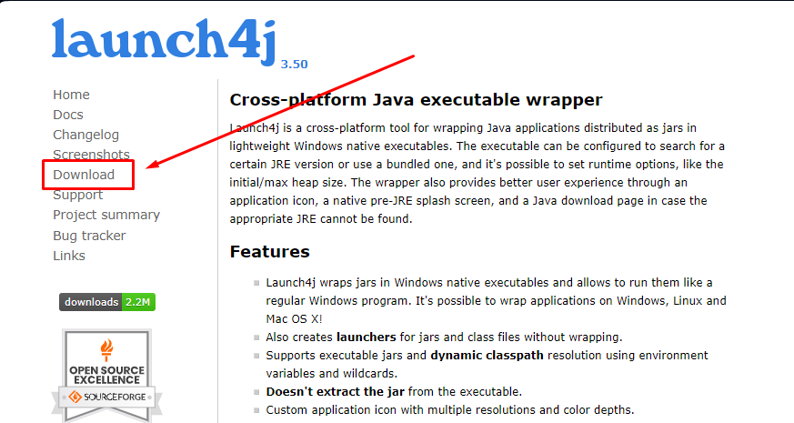

Guida conversione da .jar a .exe
How to convert jar file to exe with your own icon | Tech Projects
In this video i tell the difference between jar file and exe file
I also tell how to convert a jar file into exe file using launch4j
I also tell you how to use your own icon in exe file.
---------------------------------------------------------------------
Music credit
Me & You by MusicbyAden https://soundcloud.com/musicbyaden
Creative commons- Attribution - Share Alike 3.0
Unported - CC BY- SA 3.0
Free Download/Stream: https://bit-ly/_me-and-you
Music promoted by Audio https://youtube/pbioRi-jWj0
---------------------------------------------------------------------
-----------------------------------------------------------------------
Disclaimer:
This video is for educational purpose only.
Copyright Disclaimer Under Section 107 of the Copyright Act 1976, allowance is made for "FAIR USE" for purposes such as criticism, comment, news reporting, teaching, scholarship, and research.
"FAIR USE" is a use permitted by Copyright Statute that might otherwise be infringing.
Non-profit, Educational or Personal use tips the balance in favour of Fair Use.
------------------------------------------------------------------------
If you think that I have used your property in my video by mistake then I am ready to give you whole credit.
You can contact me on my Email or Instagram Id.
Email Is :- brijeshtechprojects@gmail.com
Instagram Is :- https://www.instagram.com/tech__projects/
------------------------------------------------------------------------
Visit My Channel Playlists for amazing Content
Click Here to Check All Android Projects:- https://youtube.com/playlist?list=PL1tIj6UC0gcsx50qq0HPh4-P3cZbnDXFr
Click Here to Check All Java GUI Projects:- https://youtube.com/playlist?list=PL1tIj6UC0gcvbA16eOPmfeI0lnpVM5QFI
Click Here to Check All Basic Programming Information:- https://youtube.com/playlist?list=PL1tIj6UC0gculCIGbHBG0na8rCUUOfIyi
Click Here to Check Git and GitHub Series:- https://youtube.com/playlist?list=PL1tIj6UC0gcuKhJ-ez3_Pr5WseweyPvqW
Click Here to Check All Web Development Projects:- https://youtube.com/playlist?list=PL1tIj6UC0gcs7ZViS5SdYGFZtFRNZQvTd
Click Here to Check All Python Projects:- https://youtube.com/playlist?list=PL1tIj6UC0gcsdKYO1xnW9cZyqkPEnexOR
Click Here to Check All C Language Projects:- https://youtube.com/playlist?list=PL1tIj6UC0gcs-PIJJHuahFbQLk5ZfmxuJ
Click Here to Check Quiz App In Android Studio:- https://youtube.com/playlist?list=PL1tIj6UC0gcuh9QmjlGAKSHui2lbJEYDU
Click Here to Check Guess the Output Series In C Language:- https://youtube.com/playlist?list=PL1tIj6UC0gcsluhGuDzkfnsNjqoA-zV6R
Click Here to Check Tips And Tricks:- https://youtube.com/playlist?list=PL1tIj6UC0gcscmGdiH1rCyADMjDz67XV6
Click Here to Check Weather App in Android Studio:- https://youtube.com/playlist?list=PL1tIj6UC0gctBrAVI9GD4G_pgw7tOUQEc
-----------------------------------------------------------------------
Follow My Instagram Page For Best Coding Content Daily :- https://www.instagram.com/tech__projects/
Visit My GitHub Profile for All Projects Source Codes:- https://github.com/Brijesh-kumar-sharma
------------------------------------------------------------------------
Thanks For Watching
If you have Any Query Comment Down Below
Thank You
Tech Projects
 https://www.youtube.com/watch?v=e3S3BOvpWic&t=74s&ab_channel=TechProjects
https://www.youtube.com/watch?v=e3S3BOvpWic&t=74s&ab_channel=TechProjects
- Scaricare launch4j

- Avviare launch4j
- Compilare il campo “Output file” (es. C:\Users\Altro\programma.exe)
- Nel campo “Jar” passare il percorso del proprio programma
.jarda convertire (es. C:\Users\Altro\programma.jar)
- Attivare l’opzione “Stay alive after launching a GUI application”
- (Opzionale) Per dare un icona al programma, compilare il campo “Icon”, passandoci il percorso di un immagine
.ico
- Nel menu in alto, andare su JRE
- in “Min JRE version” inserire
1.4.0
- in “Min JRE version” inserire
- Premere il pulsante in alto con l’icana di un ingranaggio ⚙️ per iniziare la conversione.
- Se non si sono verificati errori, verrà generato un file .exe
💡
Attenzione: una volta generato il file .exe esso se fa riferimenti per la sua corretta esecuzione ad immagini e/o file deve essere inserito nella root principale del progetto, altrimenti non troverà le informazioni rilevanti per il suo corretto funzionamento.